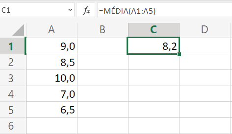

Estatística
Função CONT.NÚM
A função CONT.NÚM conta o número de células que contêm números e conta os números na lista de argumentos. Use a função CONT.NÚM para obter o número de entradas em um campo de número que esteja em um intervalo ou uma matriz de números. Por exemplo, você pode inserir a seguinte fórmula para contar os números no intervalo A1:A20: =CONT.NÚM(A1:A20). Nesse exemplo, se cinco células no intervalo contiverem números, o resultado será 5.
Vídeo criado por Microsoft Suporte (online):
Dicas:
- Clique aqui para acessar documentação.
- Consulte a documentação da função CONT.VALORES.
Função CONT.SE
Use CONT.SE, uma das funções estatísticas, para contar o número de células que atendem a um critério; por exemplo, para contar o número de vezes que uma cidade específica aparece em uma lista de clientes.
Na forma mais simples, a função CONT.SE informa: =CONT.SE(Onde você quer procurar?; O que você quer procurar?)
Vídeo criado por Microsoft Suporte (online):
Dicas:
Função MÉDIA
Retorna a média (média aritmética) dos argumentos. Por exemplo, se o intervalo A1:A20 contiver números, a fórmula =MÉDIA(A1:A20) retornará a média desses números.
Exemplo de uso da função MÉDIA:
Dicas:
Função MÁXIMO
Retorna o valor máximo de um conjunto de valores.